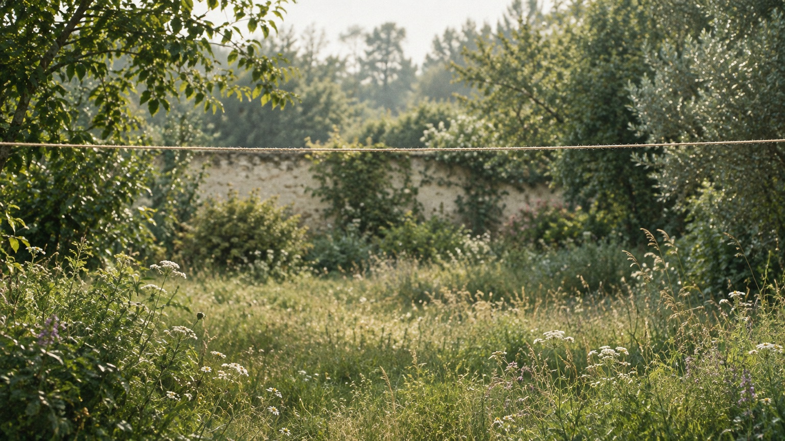

01Queen Anne’s Lace I2025

SUn & SKY
Botanical blueprints.
Original cyanotype prints made slowly by hand, exposed under the open sky.
Works exposed beneath the open sky and washed by hand in the garden.
02Fern Study No. 32025
03Garden After Rain2024
04Wild Grasses2025
05Cosmos, Late August2024
06Meadow Fragment II2025